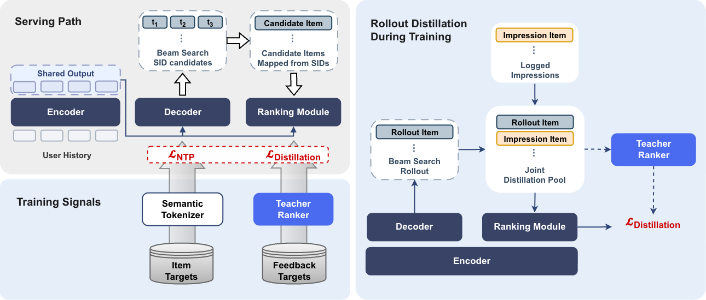
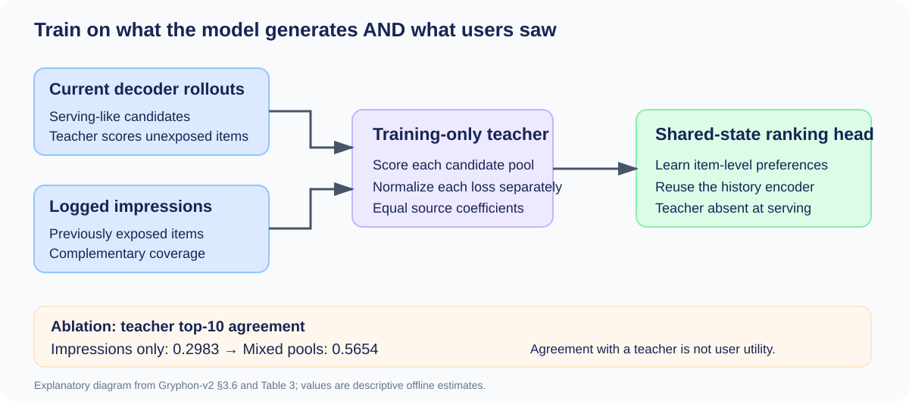

Gryphon-v2 combines generative candidate retrieval with a small ranking head, then trains that head to imitate a larger offline teacher. The aim is to preserve broad candidate generation while learning the finer preferences needed to order actual items. In a Yandex Music experiment, one served model replaces the existing recommendation cascade.
1. Generating an item is not the same as ranking it
A production cascade often has separate candidate generators, a pre-ranker, and a final ranker. Each stage adds infrastructure and may repeat work on the same user history. Semantic-ID generation offers a shorter path: predict a compact item code from the user's interactions, then resolve it into catalogue items.
The probability of a code is an imperfect final ranking score. A code can be easy to predict without identifying the most valuable song, and several items can share a code. Candidate coverage and ordering quality therefore need separate evaluation.
Gryphon-v2 retains the shared-encoder architecture of Gryphon. A history encoder runs once; both the decoder and a lightweight item-level ranking module reuse its states. The main change is supervision: the ranking module learns a stronger teacher's scores instead of relying only on next-item feedback. The teacher is absent from serving.

2. Why training needs two candidate pools
At serving time, catalogue-trie-constrained beam search generates valid semantic IDs. The system resolves them into items, expands collisions, and applies a candidate budget. Each candidate then attends to the already encoded history. Task-specific heads produce scores, whose fixed weighted combination sets the final order.
This is a small ranking module inside a shared model, rather than a separate production ranker appended to the generator. The served model has approximately 0.5 billion parameters and processes up to 2,048 history events. The teacher can use a longer history because its cost is paid during training.
Next-token prediction continues to train the generative path. Distillation trains the ranking module on two distributions. First, the current decoder produces its own candidates at every training step without checkpoint lag. These rollouts resemble the candidates that the module will receive online. A training beam of 32 keeps generation and teacher scoring affordable.
Second, logged impressions from the corresponding request provide complementary coverage. A generator has blind spots; training only on what it already generates would not expose the ranking head to the full range of items present in production logs.
The two pools receive separately normalized mean absolute error losses, added with equal coefficients. Rollouts account for more than 90% of distinct distillation candidates, but this is not a 90% loss weight. Separate normalization prevents pool size from setting the relative importance of each source.
Generation loss updates the decoder and shared encoder. Distillation updates the ranking head and shared encoder. No gradient passes through beam search, and the teacher supplies targets only. This is supervised distillation, not a policy-gradient method that directly rewards the decoder.

3. The important change is the training distribution
The earlier Gryphon already has the same ranking-module architecture. Its comparison with Gryphon-v2 isolates the value of teacher supervision more cleanly than a comparison against a generator with no ranking head.
The teacher can score an arbitrary history-item pair without requiring prior exposure. That enables supervision on the generator's own unexposed candidates, closing part of the gap between training on production logs and ranking a newly generated pool.
The ranking module still cannot recover an item that never enters the pool. Joint training lets both paths influence the history representation, but the decoder is not directly optimized as a teacher-reward policy. A high-recall proposal model with a shared-state student ranker is the more precise description.
4. What the experiments establish
Matched offline generative baselines use the same tokenizer, history features, and backbone with chronological data splitting. The table separates candidate recall, teacher top-10 agreement, and weighted pair accuracy on logged impressions.
| Model | Recall@1000 | TeacherRecall@10 | Weighted pair accuracy |
|---|---|---|---|
| Generative retrieval | 0.8643 | 0.0382 | 0.5429 |
| Gryphon | 0.8593 | 0.0392 | 0.5528 |
| Gryphon-v2, beam order | 0.8615 | 0.0381 | 0.5478 |
| Gryphon-v2, complete | 0.8615 | 0.5654 | 0.5892 |
The clearest change is ordering. The complete model recovers more than half of the teacher's top-ten selections; bypassing its ranking module removes that gain. Candidate recall remains essentially unchanged.
Candidate-source ablations support the distribution argument. Teacher top-10 agreement rises from 0.2983 with impressions alone to 0.5654 with mixed pools. Rollout-only training preserves teacher agreement but has lower logged-impression pair accuracy, showing that the pools provide different information.
The online test supplies the end-to-end result. The control uses the full cascade; treatment uses only Gryphon-v2. Active users increase by 1.41%, where an active user listens for at least seven minutes per day. This estimates the combined system change, not the isolated effect of distillation.
End-to-end latency is described as comparable to the production cascade; the paper does not provide a reusable absolute millisecond value. Its roughly fourfold throughput comparison is against the same generative backbone followed by the teacher online. That comparator is different from the production cascade.
5. Limits of the evidence
The authors acknowledge that generation, ranking, and online updates change together, preventing isolation of their marginal effects. The experiment covers one music recommendation surface, with each arm containing 8% of eligible users. It does not establish long-term or full-population effects.
Long-tail catalogue coverage, artist diversity, novelty, and exposure concentration were not evaluated. Reducing the candidate pool while improving engagement leaves these exploration questions open.
TeacherRecall measures agreement with the training teacher. Weighted pair accuracy uses impressions exposed by the old cascade, rather than independently judging everything the new model surfaces. The teacher and production ranker also use longer training histories than the offline student, so those reference results are not matched baselines.
Finally, the paper provides no controlled comparison against reinforcement-learning post-training. It establishes a viable distillation route, without resolving relative quality, stability, or compute efficiency between the approaches.
6. Practical experiments for search and recommendation
The first useful experiment is candidate-distribution alignment. With an existing generative retriever, train a small ranking head on impressions, generated candidates, and their mixture. Track retrieval coverage, teacher agreement, and independently labeled relevance separately to distinguish missing candidates from poor ordering.
A second opportunity is shared history encoding. Measure feature preparation, network transfer, inference, and candidate resolution together. Trie constraints, ID collision expansion, and candidate budgets remain operational components even when the learned serving model is unified.
Community short-text search adds explicit query intent and content freshness. A teacher trained for a music feed does not automatically measure query relevance. A transfer experiment should retain query relevance labels and check whether fresh and long-tail posts still reach the candidate pool.
Sources: paper sections 3–6, Tables 1–4, and Appendix A. The original architecture figure is licensed CC BY 4.0; the candidate-pool diagram is an explanatory drawing derived from the method and ablation table.
Discussion
Add experiment details, reproduction notes or a different take. Requires a GitHub sign-in.
Loading the discussion…